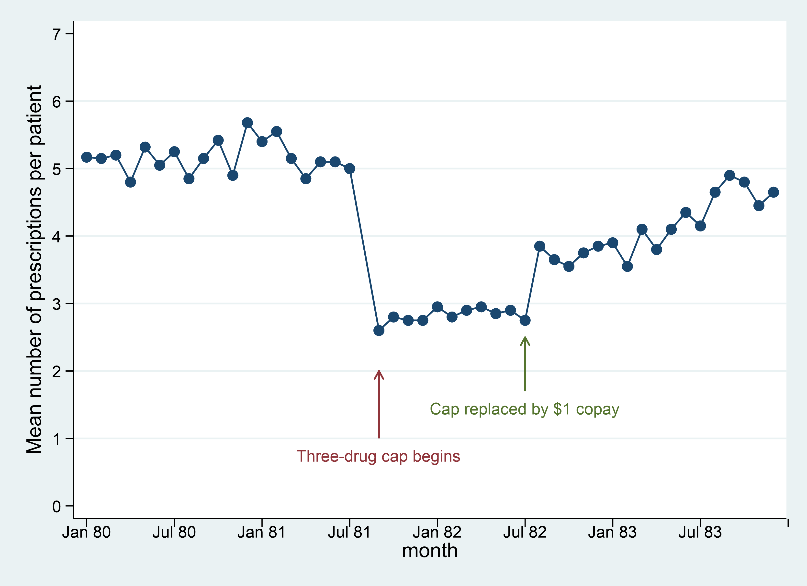

Interrupted Time Series
2020-10-22
HOME
NOTES RELATED
Notes
- Context
- the pre-post design faces a "maturation" threat to validity, if you only have 1 obs pre, and 1 obs post
- Interrupted time series designs address that issue
- Time series: not just 2 time periods
- Interrupted by an intervention or policy change
- There could be a change in the level, the trend, or both
- Basic model
$y_t = \beta_0 + \beta_1 time_t+\beta_2 post_t+\beta_3 time_t post_t+\epsilon_t$
- Timing issues
- Immediacy of effect
- Is it instantaneous, delayed, or gradual?
- Anticipatory, e.g. in response to a pre-announced policy change?
- How to address in modeling?
- Persistence of effect
- Does the effect decay over time (e.g. effect of an ad campaign)?
- Or get amplified (e.g. oil price shock)?
- Best to specify your expectations before you look at the data
- Models with >1 change point
$y_t = \beta_0 + \beta_1 time_t+\beta_2 post1_t+\beta_3 time_t post1_t + \beta_4 post2_t+\beta_5 time_t post2_t+\epsilon_t$
- Requirements
- Need to check that nothing else changed at either timepoint
- Data on continuous or counted outcome measures, summarized at regular, evenly spaced intervals
- At least 12 data points before intervention and 12 after to address seasonality (if data are monthly)
- Many authors recommend at least 50 obs in total (e.g. Shardell). Shardell also quotes guidelines of no fewer than 10 obs per parameter, to avoid overfitting
- Each observation should represent data from 100+ subjects, for acceptable variability of the estimates (Wagner)
- Autocorrelation
- Durbin-Watson test
- In ITS models, time is a key explanatory variable. So, obs from adjacent time periods may have correlated errors. This can result in understatement of standard errors, leading to incorrect inference (= incorrectly infer a variable is statistically significant)
- Forms of autocorrelation
- Correlations gradually get weaker as obs are further apart in time: AR model
- Correlations quickly drop off: moving-average
- Other patterns involving both – can use an ARMA model that combines both autoregressive and moving average
- Solutions
- Adjust the OLS model for autocorrelation: estimate the autocorrelation parameter. Then use that estimate to adjust the explanatory variables in the main regression model
- Move to an ARIMA model (less common)
- Example
- Wagner et al, 2002
- Conducting interrupted time-series analysis for single- and multiple-group comparisons, Linden
- ITS with a control group (Linden paper)
$y_t = \beta_0 + \beta_1 T_t+\beta_2 post_t+\beta_3 T_t post_t+ \beta_4 ex_t +\beta_5 T_t ex_t + \beta_6 post_t ex_t + \beta_7 T_t post_t ex_t +\epsilon_t$
- where:
- "ex" flags observations from the experimental group
- Variables interacted with Ex refer to the experimental group (second row)
- Variables not interacted with Ex refer to the control group (first row)
- So to see the effect of the intervention, we look at:
- $\beta_6$ (for change in level that’s unique to the experimental group) and
- $\beta_7$ (for change in trend that’s unique to the experimental group)
- Control variables?
- ITS models are usually run on aggregate data
- Individual characteristics are not available as control variables
- Limitations
- Segmented regression analysis assumes a linear trend within each segment.
- If you want to allow for nonlinearity, need more parameters… so, more obs
- Ecological fallacy may apply, since the data are usually aggregated
- An association between X and Y at aggregate level doesn’t necessarily imply they are associated at the individual level
- If groups were selected based on early values of the outcome, results may be biased
- E.g. those volunteering to join health insurance may have had particularly high baseline costs.
ITS in STATA
- Generate sequences to count the elapsed time since the start of each intervention.
reg ${outcome} ${T} ${INT1dummy} ${TX1} ${INT2dummy} ${TX2}
- Replicate Figure 2 of Wagner, 2002.
rxs.dta
twoway (connected presc obs) ///
(pcarrowi 1 21 2 21 (6) "Three-drug cap begins") ///
(pcarrowi 1.7 31 2.5 31 (6) "Cap replaced by $1 copay"), ///
ytitle(Mean number of prescriptions per patient) ytick(0(1)7) ///
ylabel(0 "0" 1 "1" 2 "2" 3 "3" 4 "4" 5 "5" 6 "6" 7 "7", ///
labsize(small) angle(horizontal)) ///
xlabel(1 "Jan 80" 7 "Jul 80" 13 "Jan 81" 19 "Jul 81" 25 "Jan 82" ///
31 "Jul 82" 37 "Jan 83" 43 "Jul 83", noticks labsize(small)) ///
xtick(1(6)48) xtitle(month) ///
legend(off)
